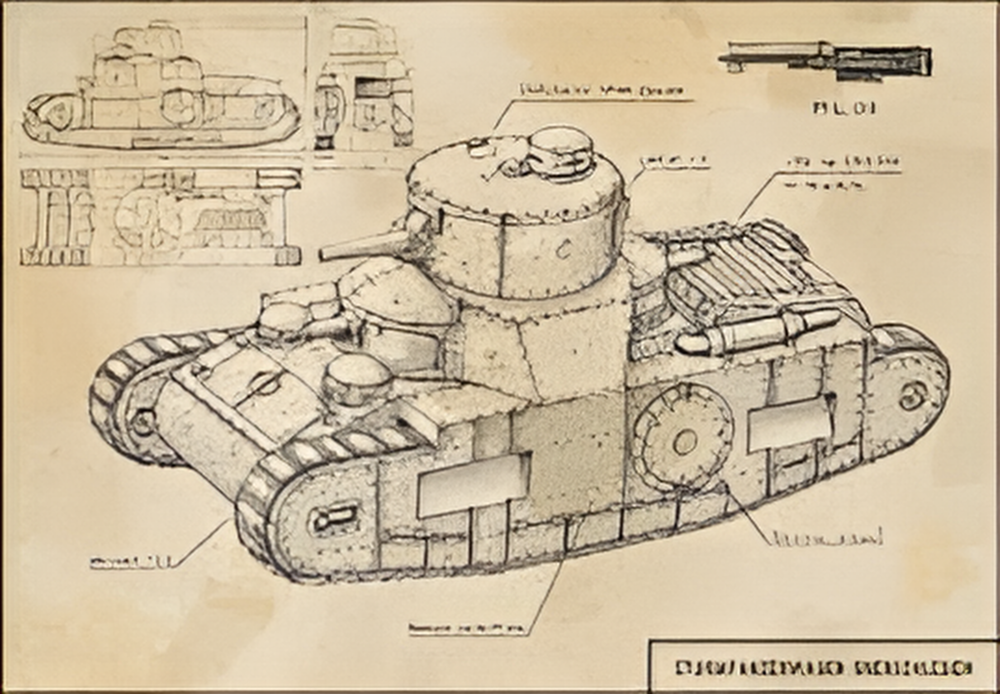

The Sturmpanzerwagen Oberschlesien was a German prototype medium tank designed in 1918 as a lighter and more practical alternative to the heavy and cumbersome A7V. Developed by the Oberschlesien Eisenhütte works, the design aimed to create a more mobile vehicle suited for rapid assaults and infantry support on the Western Front. Unlike the boxy A7V, it had a compact rhomboid shape with fully enclosed tracks, more similar to British designs, but much smaller in scale. It would have been powered by a 180 horsepower engine, giving a top speed of about 16 km/h, superior to the A7V in mobility. Two prototypes were under construction by the end of the war, but the Armistice halted progress, and the project was abandoned before completion.

- Characteristics:
- Type: Assault tank
- Weight: 19 tons
- Crew: 5
- Armament: 1 x 57 mm gun; 2 x 7.92mm MG08 machine guns
- Speed: 9 km/h